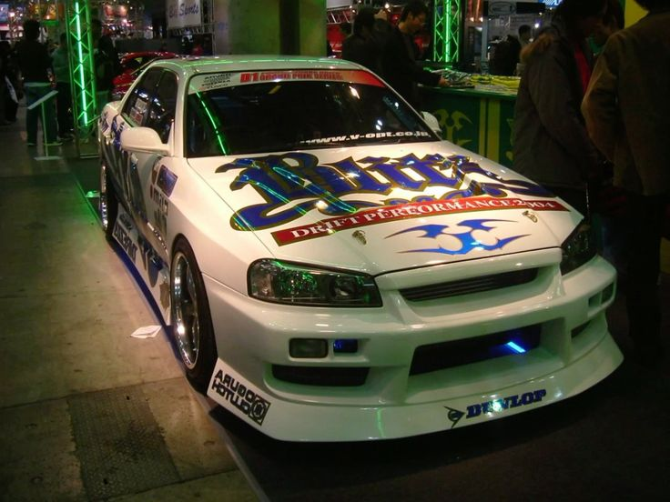
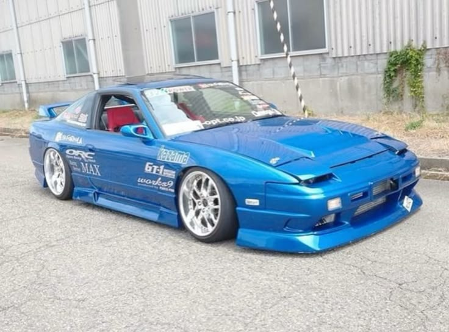
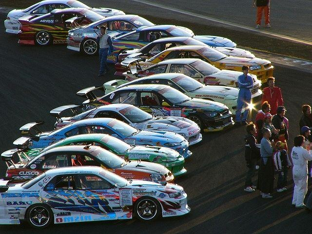
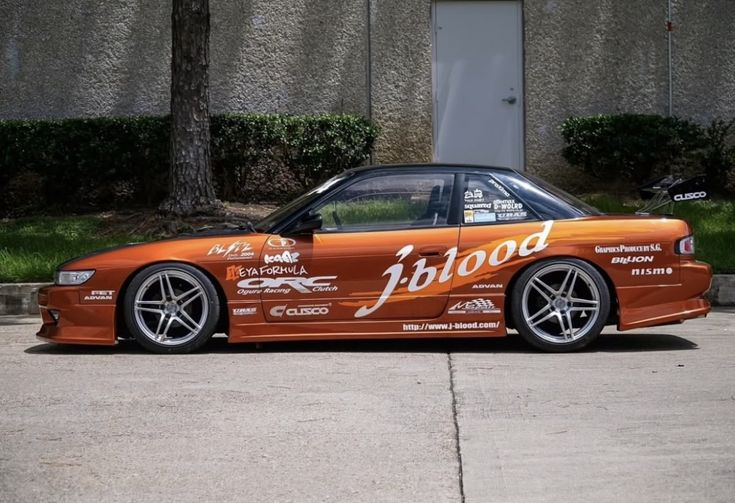
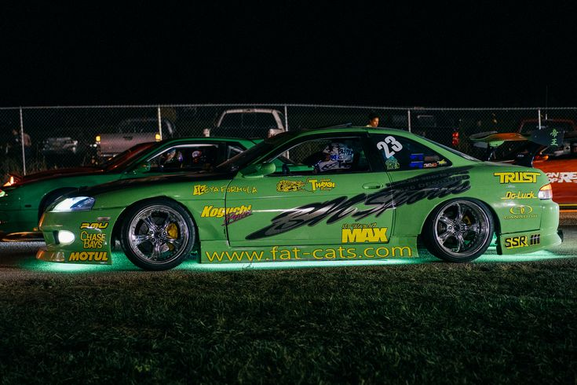
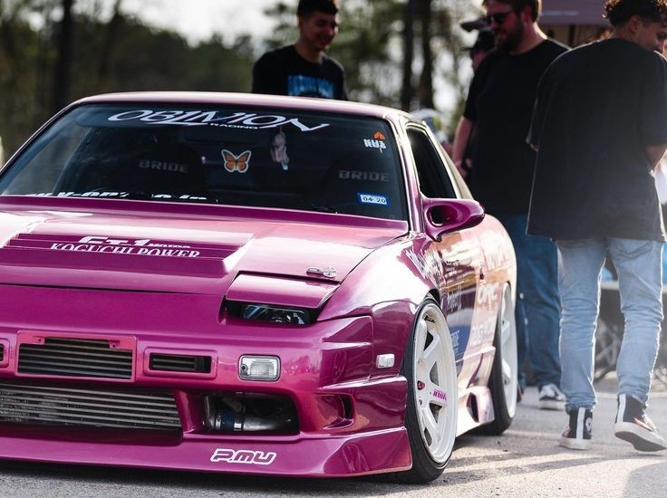
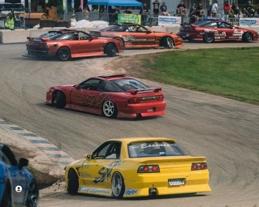
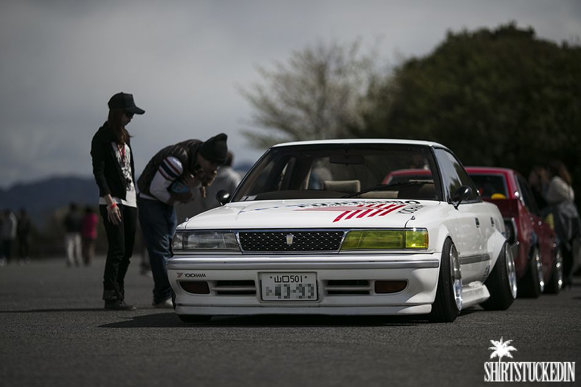
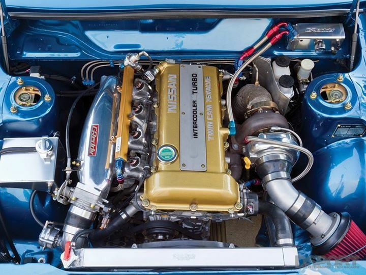

Blitz R34, with a very 2000's livery.

The famous "Hot Road" 180sx, sporting SSR Minervas.

Quintessential 2000's D1 styling. A lot of great chassis here.

S13's will always sit nicely on a set of AVS Model 5's.

When appropriate, underglow can greatly enhance the style of a machine. Especially if you plan to drift at night.

Team Oblivion has some amazing cars, and this pink 180sx brings some Hot Road flavor to the track.

Team cohesion is a great way to win style points at competition. Of course, Team Essence's yellow GTST is hard to miss here as well.

Small wheels with a tasteful stretch will always look good on these Japanese market cars.

When deciding the direction of your S13's engine bay, a top mount and a Greddy intake manifold is a classic look.